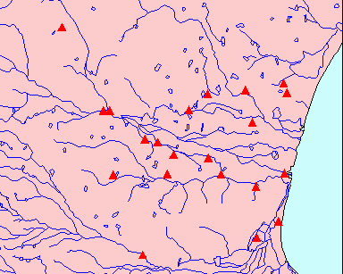

Map of Tēvāram sites (4: Naṭu Nāṭu)

Naṭu Nāṭu (NAN): 22 talam-s
- NAN_001:nelvāyil (arattuṟai)
- NAN_002:tūṅkāṉaimāṭam
- NAN_003:kūṭalaiyāṟṟūr
- NAN_004:erukkattampuliyūr
- NAN_005:tiṉainakar
- NAN_006:cōpuram
- NAN_007:atikai vīraṭṭam
- NAN_008:nāvalūr
- NAN_009:mutukuṉṟam
- NAN_010:nelveṇṇey
- NAN_011:kōvalūr
- NAN_012:aṟaiyaṇinallūr
- NAN_013:iṭaiyāṟu
- NAN_014:veṇṇeynallūr
- NAN_015:tuṟaiyūr
- NAN_016:vaṭukūr
- NAN_017:māṇikuḻi
- NAN_018:pātirippuliyūr
- NAN_019:muṇṭīccuram
- NAN_020:puṟavār paṉaṅkāṭṭūr
- NAN_021:āmāttūr
- NAN_022:aṇṇāmalai